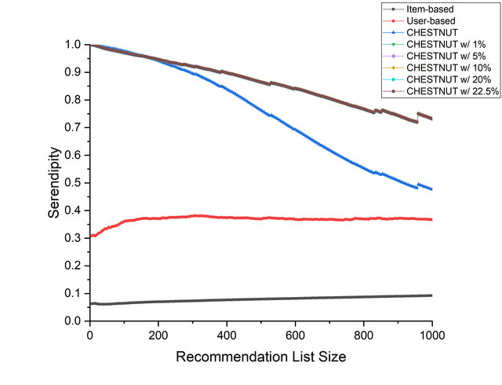
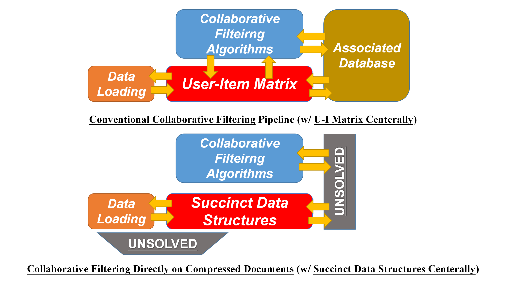
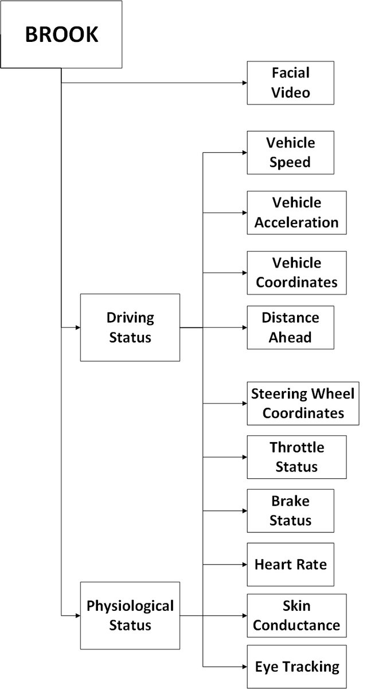
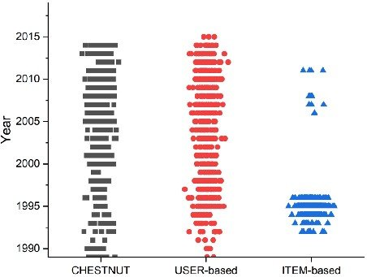
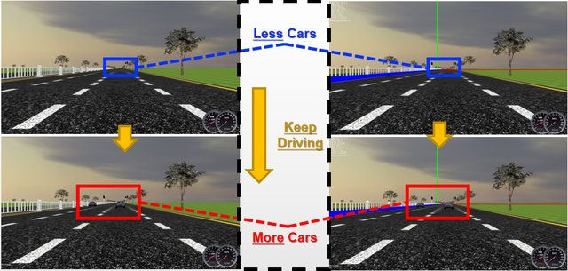

About Us: We are User-Centric Computing Group in The University of Nottingham Ningbo China, an undergraduate on-campus research society with a particular focus on digital computing technology. We have affiliated with multiple faculty advisors and their research groups, both internally and externally, to carry out interdisciplinary and (possibly) cutting-edge research outcome.
Mission Statement: The purpose of User-Centric Computing Group are three-folded:
1) Student-Centric. All dedicated and sincere efforts from students shall be well-recognized and prompted.
2) Student-First. All innovative and interesting insights from students shall be properly guided and executed.
3) Student-Independent. All dilligent students with the right mindset shall be continually inspired and well-positioned.
We Are Hiring! We are always looking for highly motivated, talented and dilligent students, who are with the right mindset, to join User-Centric Computing Group for semester/year-long projects. Please contact us if u are interested. Further information are here.
Research Overview |
We are excited about "User-Centric Revisits across the Whole Stack of Transformation Hierachy". On the one side, we attempt to have a broader view of computer system/architecture (cross-layer perspectives of Transformation Hierachy), with the end goal to improve and enhance user experience. On the other side, we aim to bridge user-centric concepts and metrics to generate, examine and evaluate the effects and influences of novel "black-box" arts and magics.
Our research has shifted from high-level applications to low-level micro-architecture, with the emphasis and focus on fast and space-efficient principles, which has been usually considered as two conflictable factors. The research approach, taken by us, is to incorporate theoratically efficient designs with practical prototypes, novel data supports and realistic studies/implications, which we aim to maximize its real-world impacts in potential and minimize the gaps for adaptions.
CHESTNUT: Fast, Scalable and Extremely Serendipitous Recommender Systems
| The concept of serendipity has been understood narrowly and we have previously extended it from only "unexpectedness + usefulness" to "relevance + unexpectedness + usefulness". CHESTNUT, from the prototype we built during 2017 to 2019, has provided the opportunity to examine the effectivenss and practicality of such an approach. Compared with other development toolkits or external libraries, CHESTNUT is fast, scalable and extremely serendipitous among the largest data set publically. We enhance the performance of CHESTNUT via customized data model to handle more contexts, theoratically implicated significance weighting and Dynamic Programming. We announced CHESTNUT in [HCI'20] as an invited paper and more details are covered in our latest journal summary [Preprint]. |
 (CHESTNUT on Github) |
Collaborative Filtering Directly on Compressed Documents: Presence and Future
| The key implication from CHESTNUT is that the Recommender Systems have started to utlize more context-based information, which was usually associated with the central building block of Collaborative Filtering - User-Item Matrix. Such demands have made us start to go beyond U-I Matrix and rethink the data infrastructure of Collaborative Filtering. As an alternative, we center Succinct Data Structures as the new data infrastructure, using Wavelet Tree as a case, to provide fast and space-efficient principles for future Recommender System Implementations. We examine the effectiveness through K-Nearest-Neighbor User-based Collaborative Filtering on 1,000 cores of Tianhe-II, and announced our case study in [PDCAT'19]. We further wrote a summary article in terms of our relevant visions [Preprint]. |
 (Journal Summary Article) |
BROOK: Multi-modal and Video Streams for Human-Vehicle Interaction Research
|
BROOK based on the key retrospection from the currently successful applications of Convolutional Neural Networks, and aims to address hidden challenges behind and make the first attempt for "domain-specific data support for Future Neural Networks". Unlike image classification databases, BROOK provides consistent data streams from as many angles (sensors, cameras, coordinates and etc.) as possible, which potentially helps researchers to build explainable designs, in the context of Human-Vehicle Interactions. We have applied OpenCV library and DenseNet models to examine the capability of speculative data estimators via facial videos, instead of equipping users with real sensors. We believe such a design choice would be capable to unleash the power of previous wisdoms on Human-Vehicle Interaction designs, by providing speculative and reliable data sources. In addition, BROOK is capable to allow interdisciplinary researchers to examine their proposals (e.g. Video Query and Analysis, Privacy Preserving and etc.). We positioned BROOK in [CHI'20] workshop and announced our first prototype in [Preprint] in a later Interactivity. |
 (BROOK Project Website) |
Examing Serendipitous Recommendations: The Missing Metrics for a Decade
| The highly practical implementations of CHESTNUT have allowed us to carry out real-world characterizations. Hence, we have organized one-year user study, which consists of 104 participants on 11 campuses from 3 countries. Although the results have significantly supported the effectivenss of CHESTNUT, we do aware of the outstanding gap between off-line serendipity estimation and online serendipity feedbacks. Combining both real-world feedbacks and off-line results, we have addressed this challenge and further propose a statistical modelling approach for offline evaluations. We have announced our early findings from such a large-scale user study in [HCI'20] and summarize it with CHESTNUT in [Preprint], and we would further introduce the latest breakthrough on off-line serendipity estimations. |
 (Early Findings of CHESTNUT User Study) |
Cognitive Driving Simulators Enhancements: Retrospections Inside-out
| We have been very interested in enhancing the performance of Cognitive Driving Simulators, with minimal modifications and optimizations. On the one hand, we have spent some time on examing the feasiblity of "restoring reality for in-lab simulations" through Video-to-video Synthesis tehcniques. We have positioned our vision on [AutomotiveUI'19] Work-In-Progress. On the other hand, we have also encountered several internal issues while building BROOK database and we have been currently working on these issues. For example, the timing variation, caused by complex integration and complicated of different libraries, has been shown that it's a natural conflict with the key idea of BROOK, which would endanger its furtuer usages since time units are violated. |
(AutomotiveUI Position Paper)  (CHI Position Paper) |
Open Source
We follow the builder culture and open source as much as we could. User-Centric Computing Group has implemented, collected and released several softwares and data sets on [Github].
- CHESTNUT: CHESTNUT is the first practical user-based collaborative filtering system, with user-centr understanding of serendipity. CHESTNUT is fast, scalable and extremely serendipitous.
- BROOK v1.0: BROOK is a series of databases for Human-Vehicle Interaction Research, with a special focus on emerging different kinds of data streams on the same timeline. The first version of BROOK is currently under review by the Ethics Committee.
- CHESTNUT User Study: The large-scale user study has been carried out to evaluate CHESTNUT. The unified system has been studied with 104 real-world participants across 11 campuses from 3 countries, which substaintially supports its effectivenss and lead to several interesting implications for the future work.
- OpenDS Documentation: The original documentation of OpenDS leads to "cold-start" for inside-out modifications and re-implementations. Hence, we built a developer-centric documentation for future references, without requirements of programming expertises, to minimize the gaps of actual implementations.
- OpenDS Scenes [2019 Version]: We customized and implemented a series of driving scenes for in-lab simulations in 2019 summer. This has been considered as the key lesson to motivate our Onerios Project.
- OpenDS Scenarios [2019 Version]: We customized and implemented a series of driving scenarios for in-lab simulations in 2019 summer. This has been considered as the key lesson to motivate our Omniverse Project.
- Video-to-Video Synthesis in OpenDS: We examined the feasiblity to restore reality for in-lab simulations through Video-to-Video Synethesis.